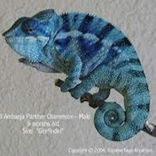
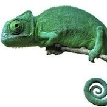
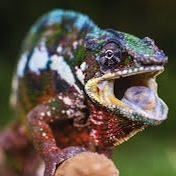
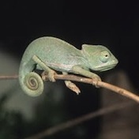

Trop de caméléons? nope.
Ici nous pensons qu'il n'y aura jamais trop de caméléons. Les caméléons, c'est mignon. Les caméléons, c'est pas con. Les caméléons, ça sent le bonbon. il est prouvé scientifiquement que regarder les caméléons tous les jours améliore la productivité et diminue le stress. Essayez !
Le caméléon de la semaine ♡











Copyright © 2022 | ❤ Caméléons